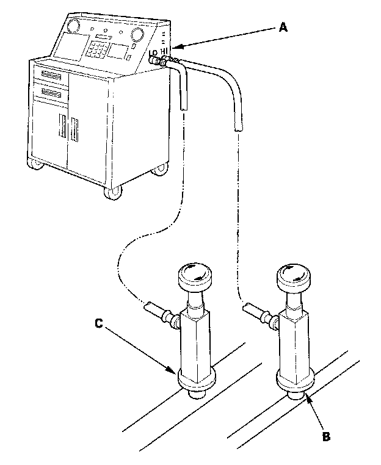

Refrigerant Leak Test
Refrigerant Leak TestSpecial Tools Required
Leak detector, Honda Tool and Equipment YGK-H-10PM or commercially available
CAUTION:
- Air conditioning refrigerant or lubricant vapor can irritate your eyes, nose, or throat.
- Be careful when connecting service equipment.
- Do not breathe refrigerant or vapor.
NOTE:
- If accidental system discharge occurs, ventilate work area before resuming service.
- Additional health and safety information may be obtained from the refrigerant and lubricant manufacturers.

1. Connect an R-134a refrigerant recovery/recycling/charging station (A) to the high-pressure service port (B) and the low-pressure service port (C), as shown, following the equipment manufacturer's instructions.
2. Open high pressure valve to charge the system to the specified capacity, then close the supply valve, and disconnect the charging station fittings.
Select the appropriate units of measure for your refrigerant charging station.
Refrigerant Capacity:
400 to 450 g
0.40 to 0.45 kg
0.9 to 1.0 lbs
14.1 to 15.9 oz
3. Check the system for leaks using an R-134a refrigerant leak detector with an accuracy of 14 g (0.5 oz) per year or better.
4. If you find leaks that require the system to be opened (to repair or replace hoses, fittings, etc.), recover the system.
5. After checking and repairing leaks, the system must be evacuated.